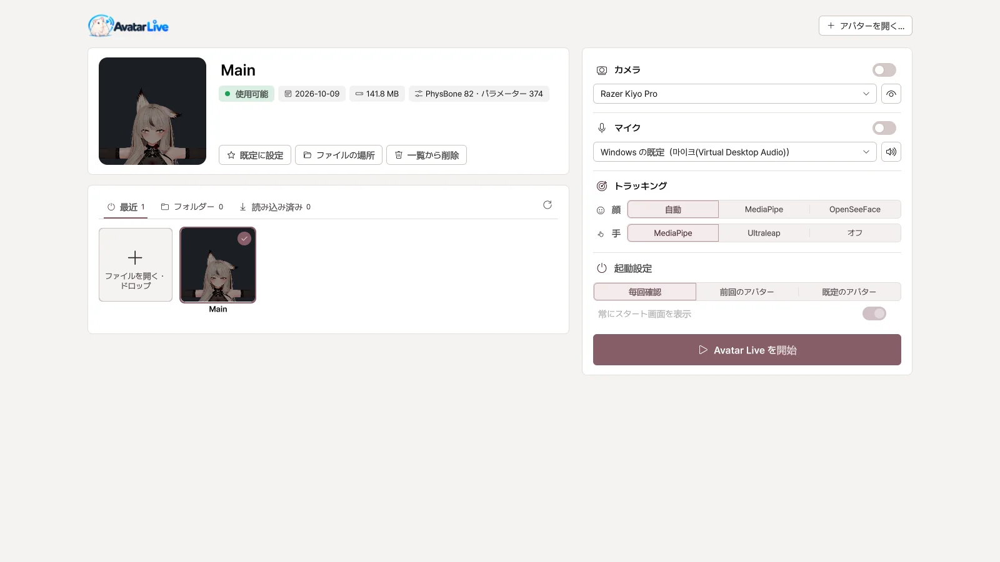
VRM変換なしで
アバタープロジェクトから一度書き出せば完了。アバターを改変しても、書き出し直すだけです。
VRChatアバターのための、Windows用VTuberアプリ
VRM変換も、複雑な再設定もなしで。
使い慣れたアバターを、配信や画面共有に活用しましょう。
こんなアプリで、すぐに使えます
機能
作り直す必要はありません。アバターに込められたものが、そのまま動きます。

アバタープロジェクトから一度書き出せば完了。アバターを改変しても、書き出し直すだけです。
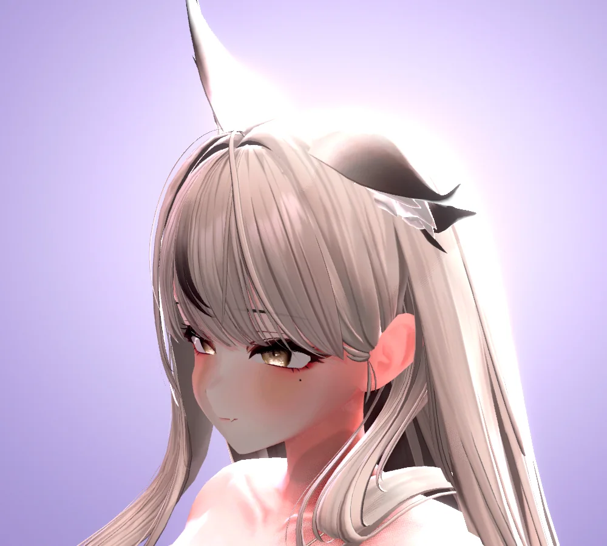
Poiyomi、lilToonなど、アバターに使っているシェーダーをそのまま表示します。
髪の揺れ、衣装のトグル、表情ボタンまで、VRChatと同じ設定で動きます。
Webカメラひとつで、表情や視線、指の関節、全身まで。iPhoneやVMC（全身トラッカー・グローブ）も、部位ごとに組み合わせて使えます。
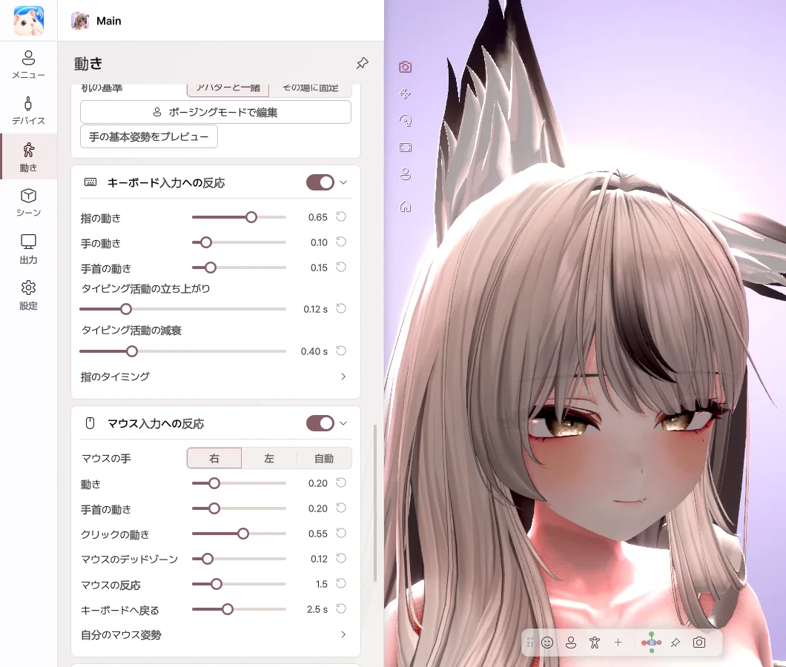
手が画面に映っていないときも、タイピングやマウスに合わせて手が動きます。入力した文字は記録しません。
OBSには透明背景で、Discordにはゲームとアバターをひとつの画面にして送ります。
使い方
VRChatにアップロードしていたアバターのUnityプロジェクト（2022.3.22f1）を開きます。
Curious Bobby - Avatar Exporterのボタンひとつで、.vavatarファイルを作ります。
ファイルを開いてWebカメラをオンにすれば、すぐに動きます。その後は、Unityは必要ありません。
VRM・.vrcaファイルだけではご利用いただけません。アバターのUnityプロジェクトが必要です。 書き出しガイドを見る
見どころ
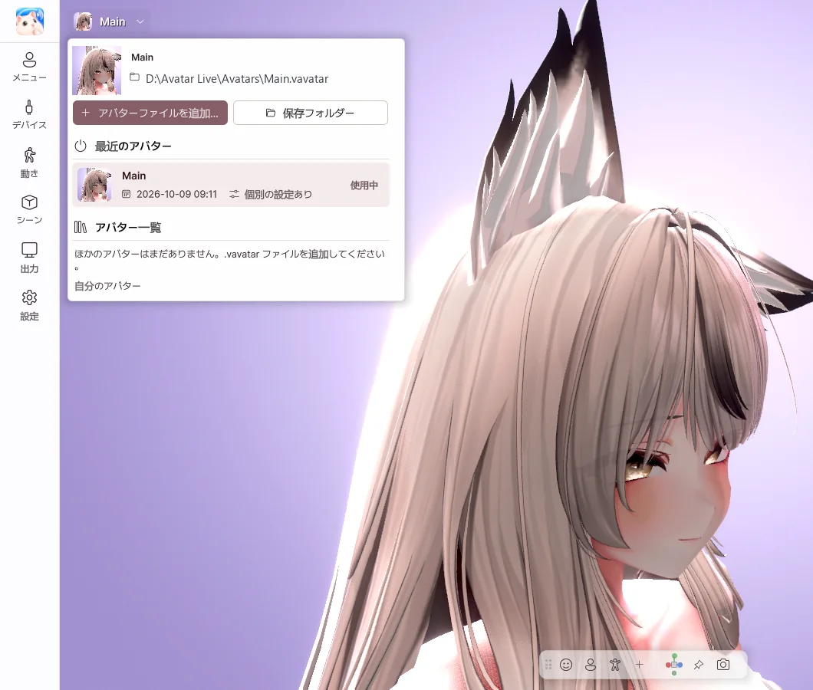
最近使ったアバターを選ぶか、ファイルをドラッグ＆ドロップするだけ。ライティングとカメラは、アバターごとに記憶します。
VRChatで使っていたメニューを、そのまま押せます。よく使う項目は、ボタンやショートカットにしておけます。
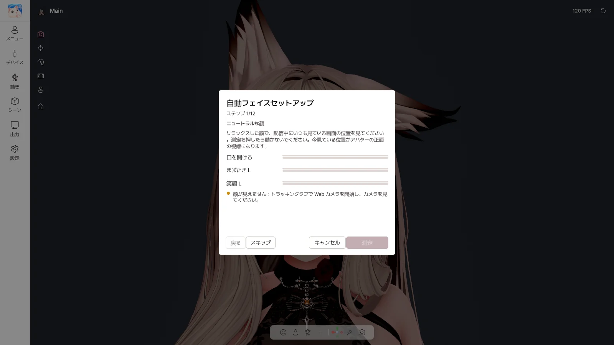
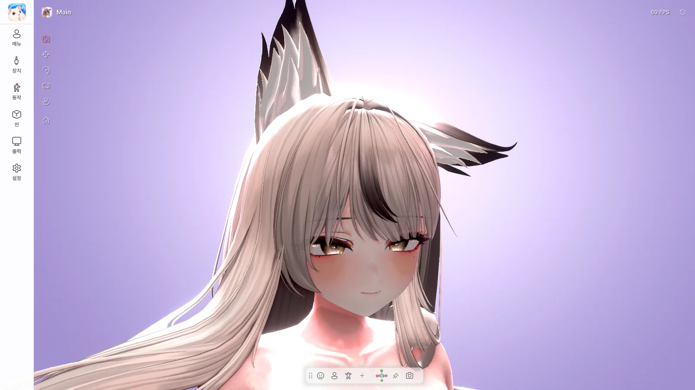
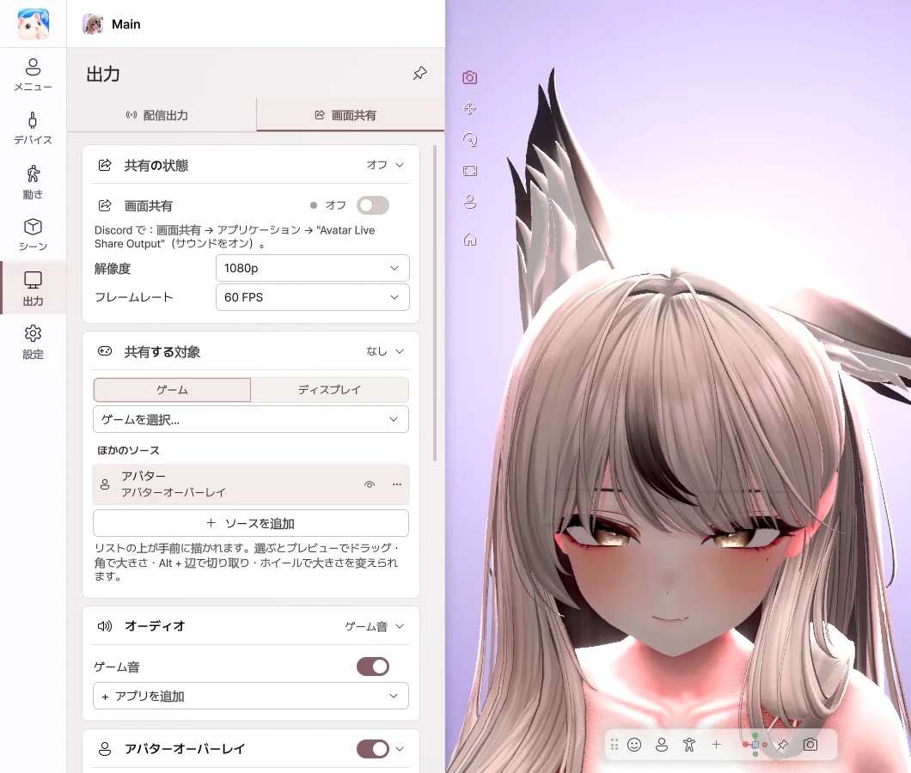
OBSなしで、ゲーム画面の上にアバターを重ねて共有します。フレンドにはゲームとアバターが、自分にはゲームだけが見えます。
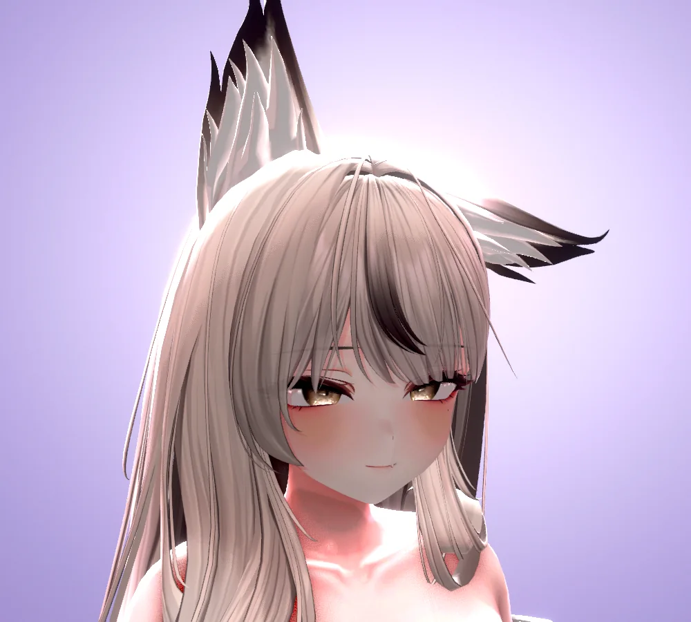
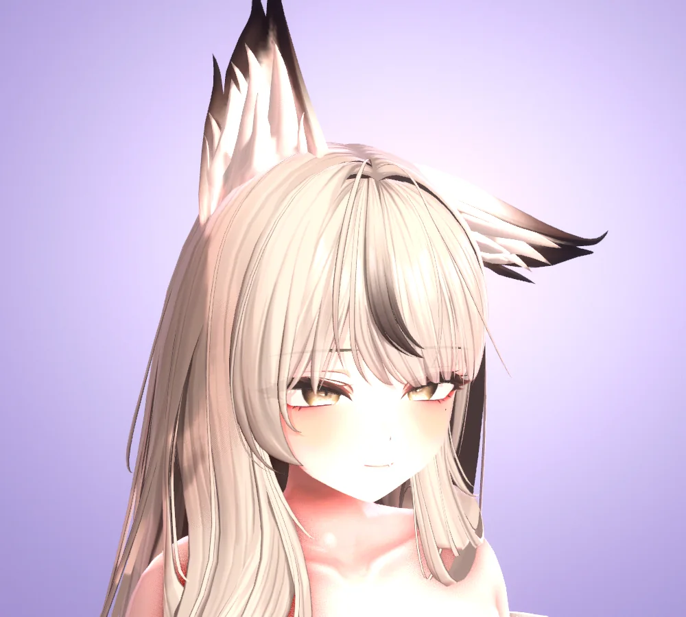
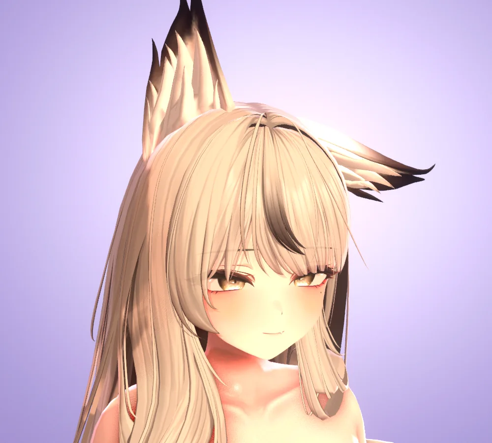
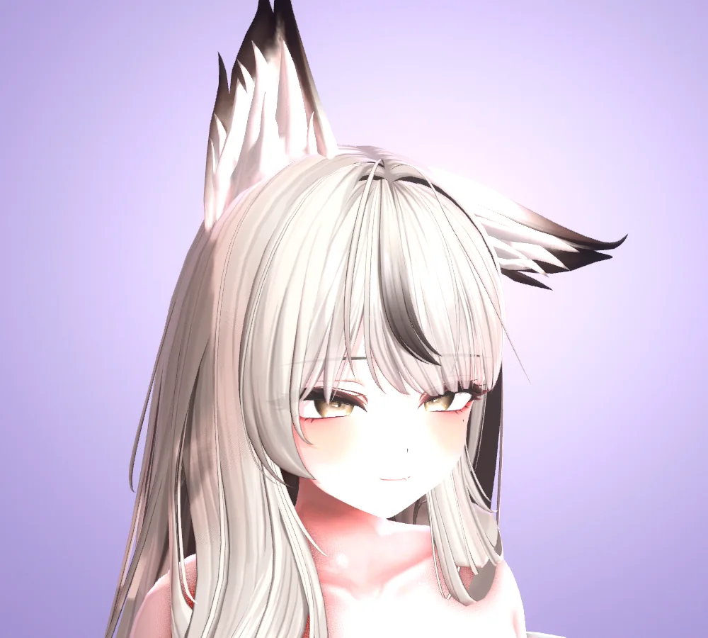
比較
対応範囲は、ソフトによって異なる場合があります。
エディション
BasicとProは同じプログラムです。入力したライセンスで、エディションが決まります。
個人での利用
1,990円
配信・動画の公開・商用利用
3,980円
すでにBasicをお使いなら、BOOTHのアップグレード（1,990円）でProになります。
価格はBOOTHの表示に準じます。デジタル商品の性質上、購入後の返金は原則として難しいため、ご購入前に必要なものをご確認ください。 返金ポリシー
FAQ
はい。VRChat にアップロードしていたアバターの Unity プロジェクトから Exporter で書き出せば、衣装やアクセサリーのトグルまで、Expression メニューが VRChat と同じように動きます。シェーダーや PhysBone もそのままです。
アバターファイルを作るときに、一度必要になります（Unity 2022.3.22f1）。作ったあとは、Unityなしで使えます。
現在は対応していません。VRMの読み込みは、今後対応予定です。
アバターに使われているシェーダーをそのまま表示します。Poiyomi、lilToon など、200 種類以上のシェーダーでテストしています。
はい。画面共有をオンにして、Discordで「Avatar Live Share Output」を選ぶと、ゲームとアバターが一緒に共有されます。
Basicは個人での利用（フレンドとの非公開のDiscord共有を含む）、Proは配信・動画の公開・商用利用のためのエディションです。Proは4K出力、ウォーターマークなし、ポージング、ポーズライブラリ、オブジェクトに対応しています。
Windows 10 / 11（64ビット）のみ対応しています。